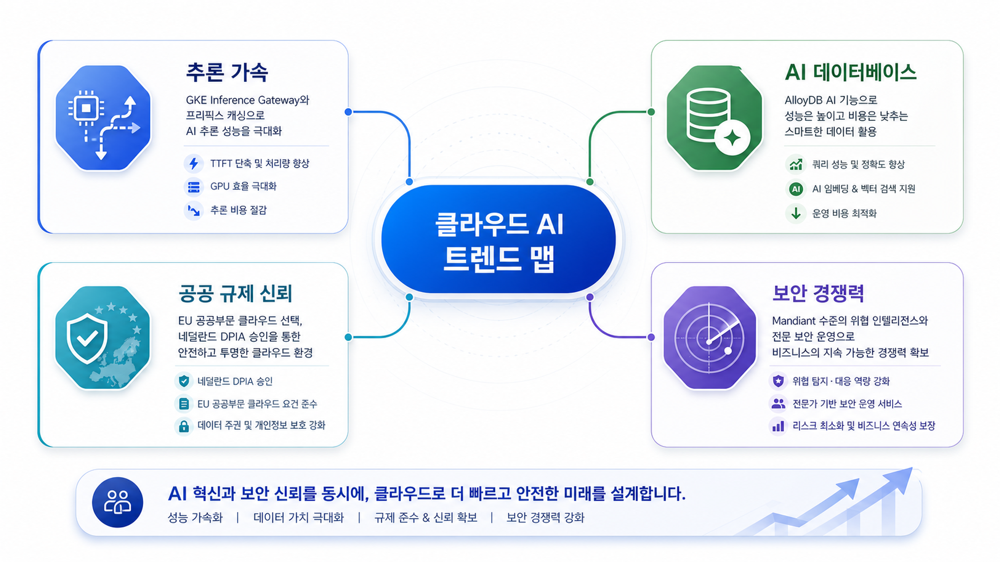
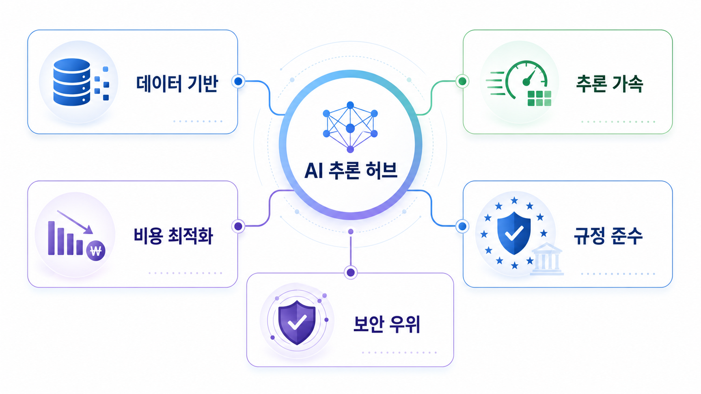
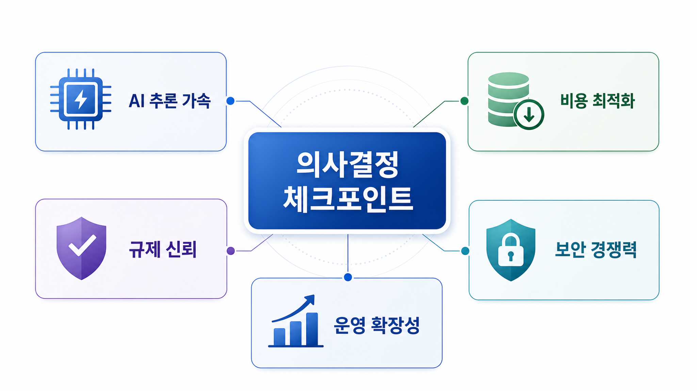

2026-07-01
GKE 인퍼런스 게이트웨이(Inference Gateway), 프리픽스 캐싱으로 AI 추론 가속화 | Google Cloud 블로그
GKE 인퍼런스 게이트웨이(Inference Gateway)는 프리픽스 캐싱(Prefix caching) 및 최적화된 라우팅 알고리즘으로 요청을 가장 적합한 액셀러레이터에 전달합니다.
- Gemini - Gemini Enterprise - GKE - Kubernetes
원문 확인이번 브리핑은 Google Cloud 공식 블로그에서 확인된 AI, 데이터, 보안, 데이터베이스 변화가 기업 의사결정에 주는 의미를 정리합니다. 신규 저장 건수는 0건이며, 데이터가 부족한 항목은 확인 필요로 표시했습니다.
이번 문서는 실제 수집·검증된 Google Cloud 공식 블로그 Markdown과 LLM Wiki 처리 결과를 기반으로 작성했습니다. 특정 내부 오퍼링이나 고객 전략으로 확대 해석하지 않고, 관찰된 기술 변화와 기업 의사결정 포인트만 정리했습니다.

2026-07-01
GKE 인퍼런스 게이트웨이(Inference Gateway)는 프리픽스 캐싱(Prefix caching) 및 최적화된 라우팅 알고리즘으로 요청을 가장 적합한 액셀러레이터에 전달합니다.
- Gemini - Gemini Enterprise - GKE - Kubernetes
원문 확인2026-07-02
Discover how AlloyDB AI functions bring Gemini’s intelligence to your data while accelerating query speed and reducing costs.
- Gemini - Gemini Enterprise - Spanner - AlloyDB - Cloud SQL
원문 확인2026-07-01
We understand that for the EU public sector, data protection is a prerequisite. We’re excited to reinforce this commitment with a major milestone.
- Mandiant - Google Cloud Security - VPC Service Controls
원문 확인2026-07-01
A new IDC Business Value White Paper found that you save an average of $4.3 million, driving a 268% three-year ROI, with Mandiant Consulting.
- Gemini - Gemini Enterprise - Mandiant - Google Cloud Security - VPC Service Controls
원문 확인2026-07-02
SOCRadar replaced its on-prem, self-managed databases so it could keep pace with the simultaneous demands of high-velocity data ingestion and heavy, real-time analytical queries.
- Gemini - Gemini Enterprise - Spanner - AlloyDB - Cloud SQL
원문 확인공식 블로그 자료에서 반복적으로 확인되는 변화는 AI 기능의 업무 접점 확대, 데이터 분석 경험의 자연어화, 보안·신원 통제의 정교화, 데이터베이스 성능·비용 선택지 확대입니다. 다만 각 기능의 실제 적용 가능 범위는 리전, 출시 상태, 가격, 기존 아키텍처와의 호환성 확인이 필요합니다.

| 관찰 영역 | 근거가 되는 변화 | 의사결정 검토 포인트 |
|---|---|---|
| AI와 업무 시스템 연결 | Gemini, Vertex AI, MCP 관련 주제 | 권한 범위, 데이터 접근, 로그 감사, 결과 검증 기준 |
| 데이터 분석 경험 | BigQuery, Conversational Analytics 등 | 자연어 질문 품질, 데이터 카탈로그, 비용 통제 |
| 보안과 신원 | Mandiant, IAM, VPC Service Controls 관련 주제 | 정책 예외, 사고 대응 책임, 규제 감사 가능성 |
| 데이터베이스 선택 | AlloyDB, Spanner, Bigtable 관련 주제 | 성능 계층, 지연시간, 운영 복잡도, 마이그레이션 리스크 |
한국 기업은 공식 출시 상태와 국내 리전·규제 조건을 먼저 확인해야 합니다. 특히 개인정보, 보안 로그, 내부 업무 데이터가 AI 도구와 연결되는 경우, 기능 도입보다 데이터 접근권한과 감사 체계 검토가 선행되어야 합니다. 이번 수집 데이터만으로 산업별 우선순위를 단정하기는 어려우므로 세부 적용성은 확인 필요입니다.

원문 기준 출시 상태, 가용 리전, 가격, 기존 계정·데이터 구조와의 호환성을 확인합니다.
AI와 분석 기능이 접근하는 데이터 범위, 사용자 권한, 로그 보존 정책을 명확히 합니다.
성능 향상이나 생산성 개선 주장은 워크로드별 비용·지연시간·운영 부담과 함께 비교합니다.
목적: 핵심 트렌드 맵
삽입 위치: hero
image2 prompt: 한국어 전문 블로그용 16:9 인포그래픽. 목적: 핵심 트렌드 맵. 삽입 위치: hero. Google Cloud 공식 블로그 기반 주제: GKE 인퍼런스 게이트웨이(Inference Gateway), 프리픽스 캐싱으로 AI 추론 가속화 | Google Cloud 블로그; Boost Performance and Lower Costs with AlloyDB AI Functions; Google Cloud confirmed to offer a safer choice for EU public sector organizations with Dutch DPIA approval; New IDC study: How Mandiant transforms security into a competitive advantage. 깨끗한 흰 배경, 구글 클라우드 로고나 공식 상표 로고 없이, 파란색/녹색/보라색 계열, 한국어 짧은 라벨 3~5개, 기업 의사결정자가 읽기 쉬운 추상 다이어그램.
권장 비율: 16:9
alt 텍스트: 핵심 트렌드 맵를 설명하는 Google Cloud 전략 인포그래픽
목적: 데이터·AI·보안 연결 구조
삽입 위치: middle
image2 prompt: 한국어 전문 블로그용 16:9 인포그래픽. 목적: 데이터·AI·보안 연결 구조. 삽입 위치: middle. Google Cloud 공식 블로그 기반 주제: GKE 인퍼런스 게이트웨이(Inference Gateway), 프리픽스 캐싱으로 AI 추론 가속화 | Google Cloud 블로그; Boost Performance and Lower Costs with AlloyDB AI Functions; Google Cloud confirmed to offer a safer choice for EU public sector organizations with Dutch DPIA approval; New IDC study: How Mandiant transforms security into a competitive advantage. 깨끗한 흰 배경, 구글 클라우드 로고나 공식 상표 로고 없이, 파란색/녹색/보라색 계열, 한국어 짧은 라벨 3~5개, 기업 의사결정자가 읽기 쉬운 추상 다이어그램.
권장 비율: 16:9
alt 텍스트: 데이터·AI·보안 연결 구조를 설명하는 Google Cloud 전략 인포그래픽
목적: 기업 의사결정 체크포인트
삽입 위치: insight
image2 prompt: 한국어 전문 블로그용 16:9 인포그래픽. 목적: 기업 의사결정 체크포인트. 삽입 위치: insight. Google Cloud 공식 블로그 기반 주제: GKE 인퍼런스 게이트웨이(Inference Gateway), 프리픽스 캐싱으로 AI 추론 가속화 | Google Cloud 블로그; Boost Performance and Lower Costs with AlloyDB AI Functions; Google Cloud confirmed to offer a safer choice for EU public sector organizations with Dutch DPIA approval; New IDC study: How Mandiant transforms security into a competitive advantage. 깨끗한 흰 배경, 구글 클라우드 로고나 공식 상표 로고 없이, 파란색/녹색/보라색 계열, 한국어 짧은 라벨 3~5개, 기업 의사결정자가 읽기 쉬운 추상 다이어그램.
권장 비율: 16:9
alt 텍스트: 기업 의사결정 체크포인트를 설명하는 Google Cloud 전략 인포그래픽